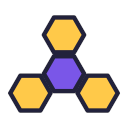
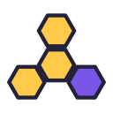
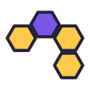
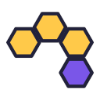
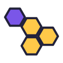
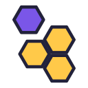
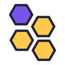

04 · purple in the middle, other side05 · rhombus lying down06 · rhombus standing up

07 · propeller, purple in the middle

08 · propeller, purple on a blade

09 · arch

10 · arch, purple at the foot

11 · triangle and a tail12 · triangle, purple on top13 · rhombus, loosened

14 · rhombus, purple sliding out15 · rhombus, purple off the grid

16 · rhombus, tiles jostled
Black
01 · 12 as it is02 · purple at the other end03 · purple in the middle04 · purple in the middle, other side05 · rhombus lying down06 · rhombus standing up07 · propeller, purple in the middle08 · propeller, purple on a blade09 · arch10 · arch, purple at the foot11 · triangle and a tail12 · triangle, purple on top13 · rhombus, loosened14 · rhombus, purple sliding out15 · rhombus, purple off the grid16 · rhombus, tiles jostled